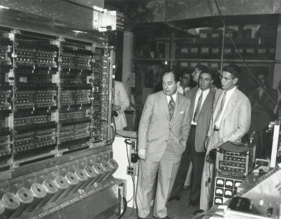

Neumann János munkássága
Kvantummechanika:
Az 1900-as évek matematikai nemzetközi kongresszusán David Dilbert előállt a híres, 23 problémából álló listájával. Ezek a problémák jelentősen befolyásolták a 20. század matematikai fejlődését. A kvantummechanika, hasonlóan a halmazelmélethez, ekkoriban filozófiai és technikai kihívásokkal szembesült.
Neumann, miután kidolgozta a halmazelmélet axiómarendszerét, nekilátott a kvantummechanika axiomatizálásának. 1926-ban felismerte, hogy a kvantumrendszer állapotát a Hilbert-tér egy pontjaként kell kezelni, hasonlóan a klasszikus mechanika 6N dimenziójának vizsgálatához, ahol N a részecskék számát jelöli. Ezeknek a dimenzióknak végtelennek is tekinthetőek, mivel a rendszer végtelen sok állapotot tartalmaz. A klasszikus fizikai mennyiségek, például a hely és a lendület, operátorokként kezelendők a Hilbert-térben. Ezért a kvantummechanika matematikája a Hilbert-tér lineáris Hermitikus operátorainak vizsgálatára összpontosul. Heisenberg híres határozatlansági elve például kimondja, hogy a részecske helyét és lendületét nem lehet tetszőlegesen pontosan meghatározni, mivel az ezekhez tartozó operátorok nem kommutatívak. Neumann új matematikai megközelítése, amely magában foglalja a mátrixmechanikát és a hullámmechanikát is, 1932-ben az "A kvantummechanika alapjai" című könyv megírásához vezetett. Ezzel a munkájával Neumann inkább a matematikusokat elégítette ki, míg a fizikusok más megközelítéseket alkalmaztak és elfogadtak.

Neumann absztrakt módszere lehetővé tette számára, hogy összeütköztethesse a determinizmus és a nem-determinizmus álláspontjait. Könyvében kifejtette, hogy a kvantummechanika nem vezethető le egy klasszikus mechanikához hasonló determinisztikus elmélet statisztikai megközelítéséből. 1936-ban egy kiegészítő művében, amelyet Garett Birkhoff-fal közösen írt, sikerült bebizonyítaniuk, hogy a kvantummechanika teljesen más logikát követ, mint a klasszikus mechanika. Például a fotonok, más néven fényrészecskék, nem képesek áthaladni két egymást követő, merőlegesen polarizált polárszűrőn, és ebből kifolyólag semmilyen harmadikon sem, amely az eredetikhez képest ferdén polarizált, akár az első kettő előtt vagy mögött van elhelyezve. Azonban, ha a harmadik szűrőt a két eredeti szűrő közé helyezik, akkor a foton képes folytatni az útját.
A számítógép tervezése: Neumann kiemelkedő teljesítményt ért el az elektronikus számítógépek logikai tervezésében. Az általa kidolgozott alapelvek, mint a kettes számrendszer használata, a memória és programtárolás, valamint az utasításrendszer, ma Neumann-elvként ismertek. Az első olyan számítógépet, amely képes volt a programot magában tárolni a memóriában, 1944-ben tervezték, majd 1952-ben helyezték üzembe. Neumann ennek a számítógépnek a tervezése során fejlesztette ki az elektronikus számítógépek belső szervezésének elméletét, amelyet a Neumann-elvként emlegetnek. Ezek az elvek még mindig az elektronikus számítógépek tervezésének alapját képezik. Neumann ezen a területen együttműködött más amerikai emigráns tudósokkal is, akik szintén fontos szerepet játszottak a számítástechnika fejlődésében.
